This section is for the applicant: the owner, builder or developer who applies for a building permit, an occupancy permit or an electrical permit. It starts with an overview of the Dashboard, the sidebar and the top bar, then shows how to apply for a building permit.
The Dashboard is the first page after you sign in. In the middle, it shows the logo of the Municipality, the Contact Details of the office (Email and Contact Number) and a How to line with the link to the FAQs.
Below are three cards. Click a card to open the list of your requests of that kind:
The sidebar is on the left of every page. It shows your name and the menu, which has the Dashboard and, under Sub Menu, the items below. Click an item to open its page. An item with an arrow opens or closes a list of pages.
Click Building Permit to start a new building permit request. The page Building Permit Request has four steps: Owner/Applicant Details, Structure Profile, Full Time Inspectors and Summary. See Section 3.5.
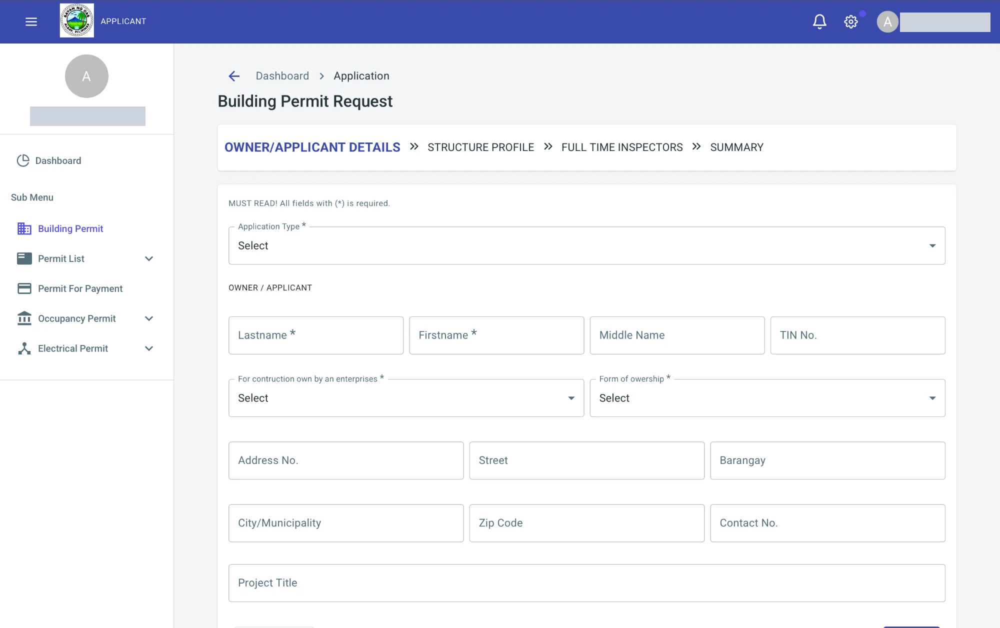
Click Permit List to show two pages:
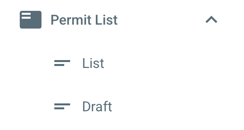

Click Permit For Payment to open the page Building Permit For Payment. It lists the permits that are ready for payment. The table has the columns Date, Application No., Application Type, Area No., Status and Action. Type a number or a type in the search box to find a request. The bottom of the table shows the rows per page and the page count. When there is nothing to show, the table says No record found.
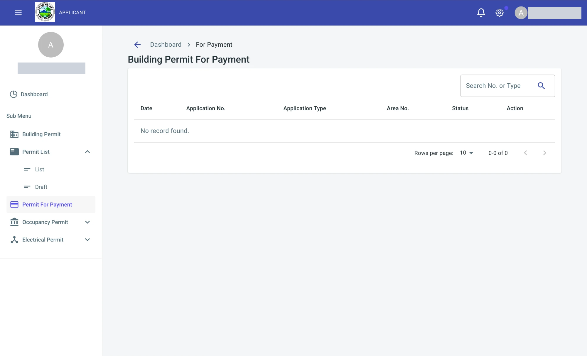
Click Occupancy Permit to show two pages:
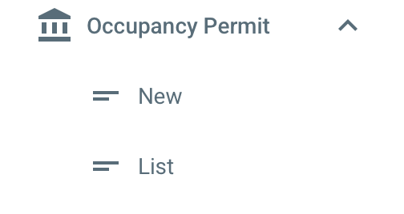
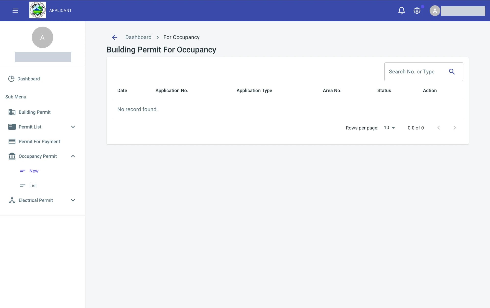
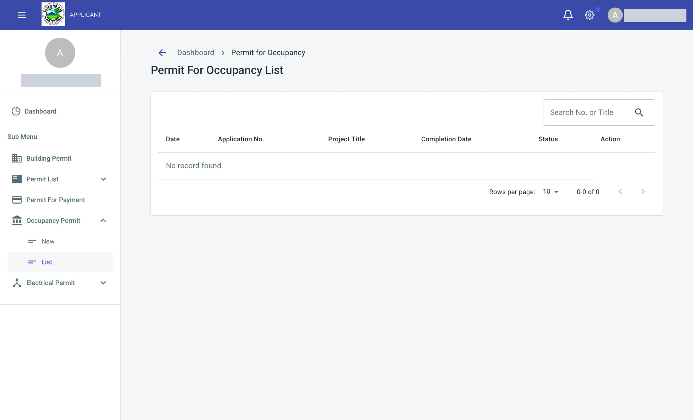
Click Electrical Permit to show List. The page Electrical Permit Request List shows your electrical permit requests. The columns are Date, Application No., Owner, Completion Date, Start Of Installation, Request Status and Action.
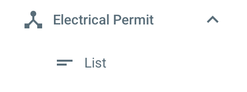
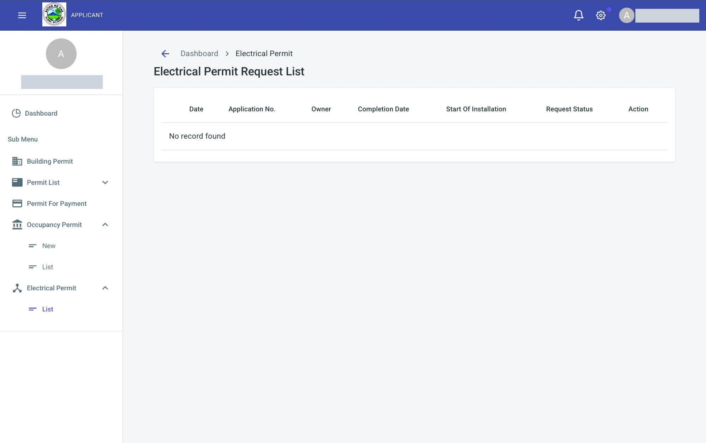
On a narrow screen, such as a phone, the sidebar is hidden. Click the menu icon (three lines) at the top left to show or hide it.
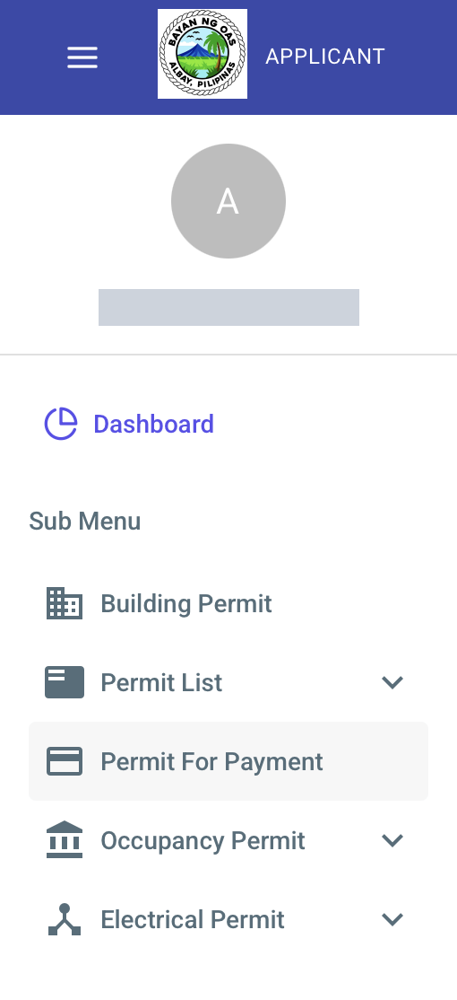
The top bar is at the top of every page. At the left are the menu icon, the logo of the Municipality and the label APPLICANT, which tells you the role of your account. At the right are the notification bell, the settings icon and your name.
Click the gear icon to open Settings. It has these options:
Click Save Settings to keep your choices.
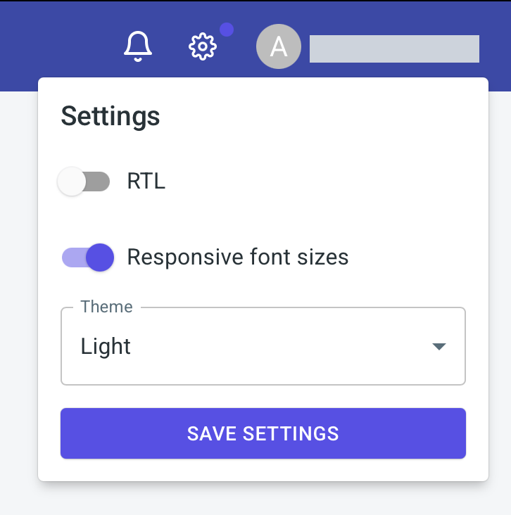
Click your name to open the account menu. It has two items:
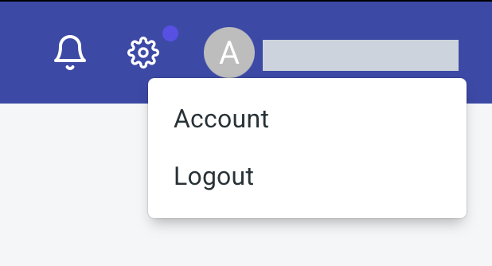
The page Account Settings has two tabs, General and Security.
The Profile form has these fields. Fields with an asterisk (*) are required.
Click Upload Profile to add a profile picture. Click Save Changes to keep your changes.
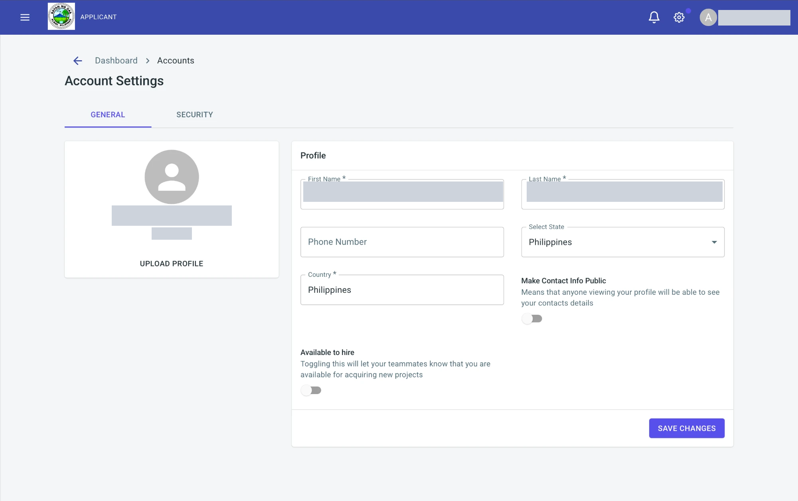
Click the Security tab to change your password. Type the new password in Password, type it again in Password Confirmation, then click Change Password.
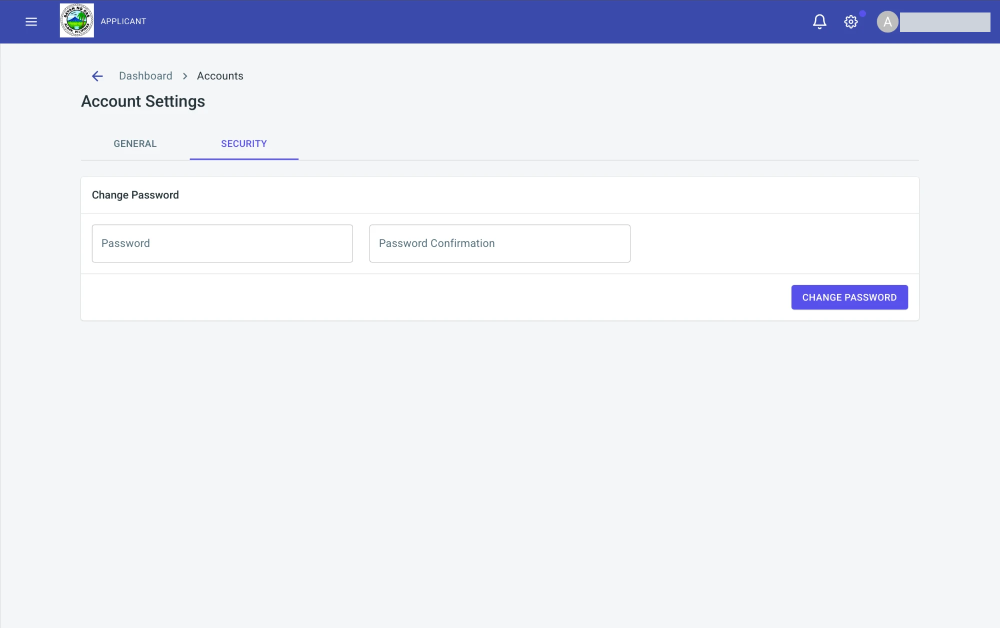
A building permit application has four parts: Permit Request, Requirements, Application Review, Sent to Building Official and Approved.
You can start a building permit request in two ways.
From the sidebar. Click Building Permit in the sidebar. The page Building Permit Request opens.
From the Dashboard.


The request is a form with four steps. The step bar at the top of the form names them, and the step you are on is shown in bold blue:
The buttons at the bottom of every step are the navigation controls:
On the last step, Next is replaced by Save As Draft. See Step 4.

When a required field is empty, a red message appears under it and the field is outlined in red. Fill it in, then click Next again. Messages you may see:


This step is about the applicant and the project. Fill in these fields. The first five are required.
The types of Application Type are: Fire Safety Evaluation Clearance, Amendatory, Complex, Renewal, Locational Clearance, New and Simple.


This step describes the building and where it will be built. It has four parts.
Location of Construction
Scope of Work
Check at least one of: New Construction, Erection, Addition, Alteration, Renovation, Conversion, Repair, Moving, Raising, Accessory Building/Structure, Legalization of Existing Building, Others. If you check Others, type the work in the Specify box.

Use or Character of Occupancy *
Check the box that matches how the building will be used. This part is required. The choices are grouped:
Each group also has an Others box with a Specify line for a use that is not listed.

Size, dates and costs
If a required field here is empty, for example No. of units, it turns red and shows a message.

This step names the full time inspector and supervisor of the construction works, who represents the owner, and signs for the applicant.


The Summary shows everything you typed on the Unified Application Form for Building Permit, as it will be printed. Read it carefully. To change something, click Previous until you reach the step, change it, then click Next again. The form is made of boxes:


At the bottom of the Summary:

The page Requirements List opens after you click Save As Draft on the Summary. It is where you attach the documents that support your application. You can also open it later: in the List of Building Permits, click the three dots of the application, then Requirements.

The box Attach Documents lists six groups of documents. Click a group to show its requirements at the right. Three buttons are at the top of the page:

Each requirement shows two tags. NO FILES means that you have not attached a file yet. OPTIONAL means that the requirement may be skipped. A requirement that is not optional must have a file before you can click Proceed to Permitting. Click More beside a requirement to attach its file.
The page says Fill out forms & sign then upload scanned copy. Fill in and sign each form, scan it, then upload the scan. The Unified Application Form is the Summary of step 4: print it, sign it and have Box 5 notarized. The requirements are: Unified Application Form for Building Permit with Notary, Plumbing/Sanitary Permit, Application for Electrical Permit, Mechanical Form, Electronics Form and Excavation Form.
Upload the plans of the building: Architectural, Structural, Plumbing, Electrical, Mechanical, Electronics and Excavation.
Upload the supporting technical documents: Lot Plan, Vicinity Map, Specifications, Bill of Materials, Electrical Design Analysis, Structural Design Analysis and Soil Investigation/Testing Analysis.
Upload the PRC ID and the PTR of each professional who signs the plans and documents: Civil Engineer, Architect, Professional Electrical Engineer, Registered Electrical Engineer, Sanitary Engineer, Master Plumber, Professional Mechanical Engineer, Geodetic Engineer and Professional Electronics Engineer.
Upload the documents about the land and the people involved: TCT, Tax Declaration (Updated), Current Real Property Tax Receipt, Barangay Clearance, Home Owners Association (for a structure inside a village or subdivision), Authorization Letter, and the Valid ID of the Applicant, of the Representative and of the Land Owner.
Upload the clearances: Fire Safety Evaluation Clearance, Zoning/Locational Clearance, DPWH Clearance (if along a national highway) and CSHP (DOLE).

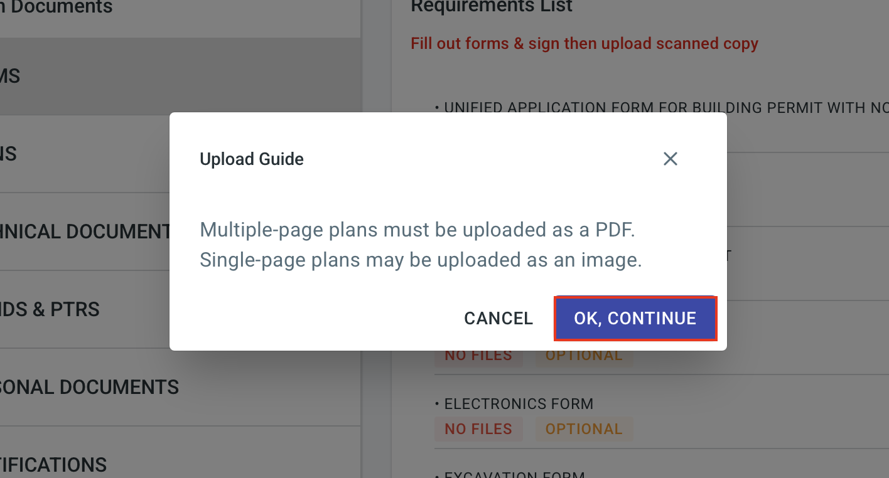

After you save, the message Uploaded requirements has been sent. Assessment analysis is processing in the background. appears, and the tag of the requirement changes from NO FILES to 1 FILES UPLOADED. The number is the count of the files of that requirement.
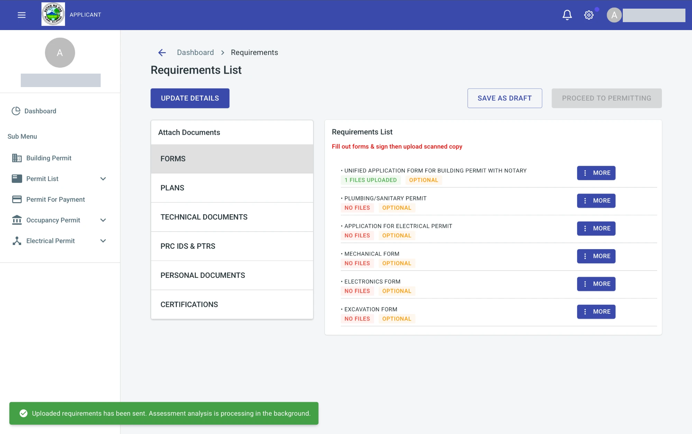
The menu of More then has these options. An option that is not available is dimmed.
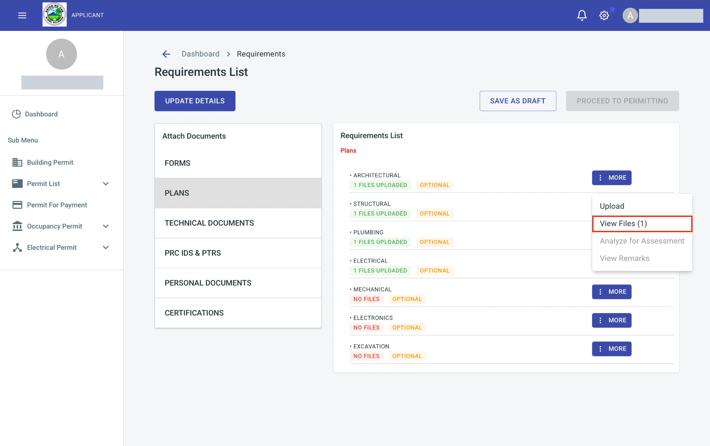
When every requirement that is not optional has a file, click Proceed to Permitting. The application is sent for review, and its status in the List of Building Permits changes to SENT TO OBO. The next two parts explain who reviews it: first the Reviewer, then the Building Official.

After you click Proceed to Permitting, the application is sent to the Reviewer. The Reviewer is an office of the Municipality that reviews the requirements you submitted. The Reviewer opens the files of each requirement, checks them, and then sets the application as review started. The pages of the Reviewer are in Section 4.
You do not need to do anything while the application is under review. The only change that you see is the status of the application in the List of Building Permits: it changes to SENT TO OBO.

The status SENT TO OBO means that the application is with the Office of the Building Official (OBO), the engineering office of the Municipality. This status is the only change that you see on your side while the application is with the OBO. The OBO decides on the application. It does these things:
The pages of the Building Official are in Section 5.
When the Building Official approves the permit, the status of your application in the List of Building Permits changes from SENT TO OBO to APPROVED, and the Building Permit No that the Building Official typed is shown in its column. The bell at the top of the page also shows a notification. The pages of the Building Official are in Section 5.5.

Click the arrow icon of the application to read the remarks of the Building Official. Each remark has its date, the office in Process From, which is Approver, and the Remarks. After approval, you can see the note of the approval and a second note, Approved For Printing, which tells you that the permit was sent for printing.

After approval, more options are available in the menu of the three dots. Assessments shows the fees of the application, and View Permit appears. Edit and Apply For Electrical stay dimmed. Click View Permit.

The page shows the Building Permit of the Office of the Building Official. It has the type of application, the Building Permit No., the date issued and the FSEC number, then the owner, the project title, the location, the use of the building, the scope of work, the total project cost and the professional in charge of the construction. At the bottom is the name and the signature of the Building Official who issued it. Official Receipt No. and Date Paid show N/A until the fees are paid. Click Print Permit to print the permit. Click Cancel to go back.

Click Permit List in the sidebar, then List, to open the page List of Building Permits. It shows every building permit application you have started. A new application appears here right after you click Save As Draft on the Summary.

Click New Application at the top right to start another request. See Section 3.5. The table has these columns:
At the right of each row are two icons: the arrow and the three dots. The bottom of the table has Rows per page and the page count.

Click the arrow to open Building Permit Remarks. The offices that process your application write their remarks here. The table has the columns Date, Process From, Remarks and Status. A new application has no remarks yet, so the table says No remarks found. Click the X to close the window.

Click the three dots to open a menu of what you can do with the application. An option that is not available for the current status is dimmed.

Click Details to read the application as the Unified Application Form for Building Permit. Besides Boxes 1 to 5, it has Box 6, to be accomplished by the Processing and Evaluation Division, with the table Assessed Fees, Account Code, Amount Due and Assessed By. Until the fees are assessed, it says No assessment found. The buttons are:

Click Edit to change an application. It is available only while the application is a DRAFT. The page Update Building Permit Request shows the whole form with your answers, so you can change them. Fields with an asterisk (*) are required.

At the bottom of the page, click Update Request to save your changes, or Cancel to leave without saving.

Click Assessments to see the fees assessed for the application. It is dimmed while the application is a draft, because nothing is assessed yet.
Click Requirements to open the Requirements List of the application, where you attach the documents and send the application for review.
The option View Permit appears in the menu only after the application is approved. It opens the permit.
Click Apply For Electrical to request an electrical permit for the building. It is dimmed until the application reaches the stage that allows it, and after you have applied once.